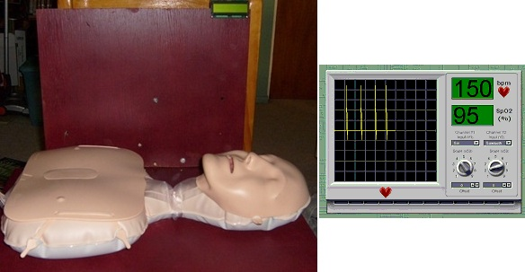

Art meets Science with Digital Technology
Michael Fenton came to Secondary teaching with research and industry experience. He knew that investigating how the world works requires seeing more than the eyes alone can reveal. He noticed junior science students were excluded from using data loggers and sensors reserved for senior classes; they were expensive and fragile. Could easily accessible game design software be tricked into working as a gamified science lab?
Game software as a digital technology can capture and record data to learn about the world. Processed data can reveal trends and patterns, or time periods (how long), or count frequencies (how often). If each learner has their own no cost, open-sourced, highly adaptable, and easily coded "RIGEL", imagine how much science can be revealed using this technology! And imagine the creativity released to personalise and adapt such a technology.
RIGEL auto connects and recognises sensors or output devices on PICAXE, Arduino, ESP8266 or ESP32 development boards or similar. A truly universal games, electronics and science link!
Key ideas
- Science and Technology are interrelated and interdependent. As lenses were invented and improved, tiny single-celled bacteria became observable using a microscope. New science needed better machines that depended on science to make them better. Similarly, this is where RIGEL, a digital technology, can be used to observe patterns in the world as Science. Michael invented the Real-world Interactive Games and Electronics Link.
- He developed a wide range of DIY home-made and low-cost sensors, many cost just a few cents. Sensors can measure water vapour, temperature, pressure, alpha radiation, visible light, ultra violet (UV) light, infra red (IR) light, water hardness, static electric fields, mobile phone signals, angles, magnetic fields, and salinity.
- These sensors are connected to Picaxe microcontrollers that send data to RIGEL at high speeds.
- RIGEL can talk in English or any other language, including te reo Maori. It plays games using sensors connected to your body or DIY game controller. It is a home security centre, a science lab, and an industrial measurement and control (robot remote sensing and control) centre. RIGEL can set the mood with dramatic music as Thunderbird 3 dodges asteroids!
- RIGEL can connect to Picaxe sensors in a CPR manikin so learners experience how to do CPR compressions at the correct rate, potentially saving a life. If that is to much responsibility, get fit by flying a glider using an exercycle as the game controller!
- Michael invented the "Build it, Test it, Use it" pedagogy for inquiry-based learning and discovery. This is how learners find new uses for game devices or new low-cost science sensors they construct and connect to RIGEL.
- He promoted affordable, inquiry-driven cross-curricula learning sharing his research at conferences, through publications, and on his Nexus Research Group website.
- Michael pioneered the general use of a low-cost, scalable solution to make experimental and hands-on authentic maths, science, and discovery learning accessible in resource-limited schools.
Build it
RIGEL is coded in game design software that beginners can code using 'drag and drop' blocks. Instead of a game, sensor inputs replace mouse and keyboard events, making the game behave as a science sensor user interface and data plotter/recorder. RIGEL is a real-world interface connecting students into a virtual game world; 2D or 3D! This open-ended design, where different game levels were different displays (e.g., a science lab sensor readout, a 3D flight simulator, or a home security system) reminded students that RIGEL was a ‘what does it measure and display today?’ machine.
RIGEL uses Picaxe sensor units that can have up to 8 sensors and 8 output devices (e.g., motors, switches, lights). A USB-to-serial cable provides bi-directional high speed communication using a simple but compact data package protocol of Michael's design. The game software simply interprets data as game control inputs.
Download the Microsoft Conference presentation [PDF]
"'Build it' Easily accessible game design software quickly creates a graphical user interface for a gamified science lab. Science sensor data is interpreted as keyboard or mouse input. Instead of a player, dials or data points move.

"RIGEL main menu screen. Display and record sensor data in the Science Lab, or practice CPR, or play a game that requires physical activity!
Test it
Here is where Art meets Science and Technology. Students are taught to use the game software, and consider colour use, shapes, sizes and language. Object-oriented programming is tested to make sure everything works as expected. A fun first activity is a 2D platform or maze game. What music should it have for what kind of feeling? What sound effects work best? How do you create original artwork? In what style? This built up their confidence and provided some prior knowledge before embarking on their own investigations using the more advanced RIGEL software created by Michael. A typical introductory worksheet had three stages;
- Build a graphical app - a ‘howto’ description with screenshots and suggestions to personlise thier app.
- Test another persons app - this encouraged friendly peer review, shared expertise, and see there is more than 'one right way' to complete the task objectives.
- Use your app - a first attempt at connecting to a Picaxe sensor module to replace keyboard or mouse control.
There are many opportunities for learners to engage in meaningful maths. For example, co-ordinates, reflection and symmetry, fractions, rounding, rates of change, and percentages.
Depending on the goal of the lesson, learners would design their own sensor system and connect this to Michael's advanced RIGEL software to see the effect. One example was using light dependant resistors on the handle bars of an exercycle. RIGEL interpreted the sensor data as left and right arrow keys to control a spaceship in a 2D game.
Download the RIGEL example screenshots [PDF]
Use it
Learners came up with their own creative and authentic uses for a system such as RIGEL. This activity provided a low floor, high ceiling task at low cost with wide connections to many different learning areas and subjects. Learners were able to remotely monitor or activate equipment, monitor alarms and create a simple security system, monitor and record respiration and heartbeat, practice CPR, and link a player remotely to games on a computer or 3D games projected into a room.
Authentic cross-curricula learning at school and home
In general the RIGEL system enabled students to sense more of the world around them. It encouraged learners to get more physically active as they experimented with bicycles, hopping, and dancing to control characters in games they created. They experienced the art, imagination and creativity that is often overlooked in traditional science activities. Students could try and fail. Failure was a learning experience. Students also used the f-word. They reported they had fun!
Making low cost DIY home-made sensors
Since the early 2000's Michael has developed a number of sensors; some are shown on his YouTube channel. Some sensors are very simple single component sensors costing a few cents. Other sensors are inexpensive but include a power source and a few more components. Apart from the straightforward voltage, current and resistance measurements, the multi-meters can also detect; visible light, infra-red light, ultra-violet light, ionising radiation such as alpha particles, temperature, angle, bend, salt, humidity, pressure, touch, paper thickness, mobile phone transmissions, static electric fields, and more.
All of these sensors can be used in the RIGEL game and electronics link, to control game players or be displayed and recorded.
Warning: DO NOT let students test boiling water or live electrical outlets!
There is no need to calibrate temperature sensors using boiling water. Where in the real world would a student expect to record that temperature? For some reason teachers default to using ice and boiling water to calibrate sensors. If you are investigating cooling curves, YOU should safely get sensor readings at 100 °C and PROVIDE THIS to learners.
Always remind learners that scientists work carefully and safely, no matter what they see in movies or TV!
YouTube videos
Michael has documented many of his projects in YouTube videos. Here is the 3D flight simulator. Helping to get students physically fit while inside playing computer games!